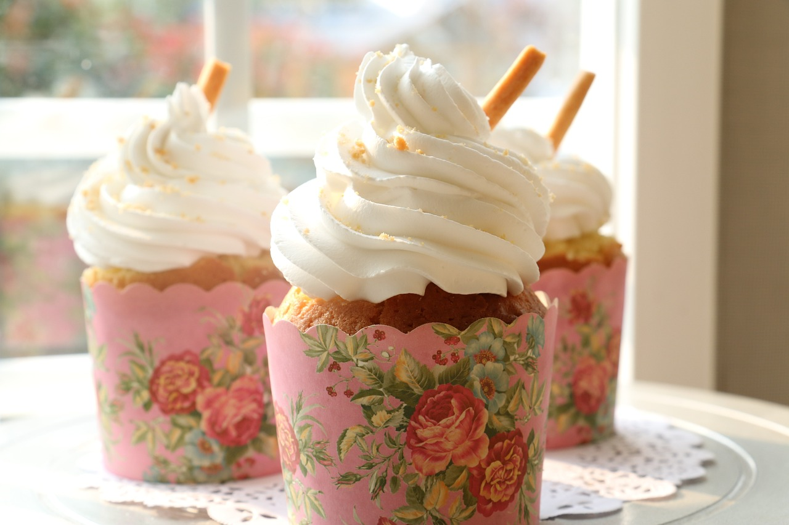

Cup Cakes

Source: Cup Cake Recipe
- Line a 12 cup muffin pan with paper cup liners. In a medium bowl, combine graham cracker crumbs, crushed pecans and melted margarine, mixing well to blend. Spoon mixture evenly into a 12 cup muffin pan lined with paper cup liners. Press mixture with a spoon to firm bottom. Puree raspberries and set aside.
- Beat cream cheese until fluffy. Add condensed milk and 1/2 cup of the raspberry puree and mix until well blended. Fold in whipped topping.
- Spoon evenly into baking cups. Freeze for at least 5 hours. When ready to serve, remove paper liners. Invert cakes onto individual serving plates. Drizzle remaining raspberry puree over cakes. Garnish with a few whole raspberries. Serve frozen.